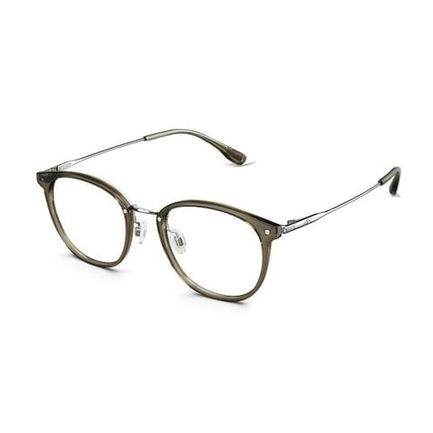
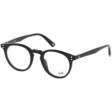

Tựa một tác phẩm điêu khắc mềm mại, kiểu tóc kinh điển này ôm trọn đường viền hàm một cách hoàn hảo, khéo léo tăng thêm độ phồng ảo ở phần đuôi tóc, lấp đầy khoảng trống hai bên và cân bằng tuyệt đối với chiếc cằm nhọn thanh tú, mang lại vẻ đẹp cổ điển nhưng không kém phần hiện đại.
Chi tiếtNhững lọn xoăn tựa dải lụa mềm mại, bung xõa tự nhiên và khởi nguồn từ ngang tai trở xuống sẽ tạo ra một hiệu ứng thị giác mở rộng không gian một cách kỳ diệu. Vũ điệu của những lọn tóc này sẽ đánh lừa thị giác, khiến phần hàm dưới trông đầy đặn, cân xứng và quyến rũ hơn bao giờ hết.
Chi tiếtĐây chính là "vũ khí bí mật tối thượng" giúp обрамление (framing) lại khuôn mặt một cách nghệ thuật. Những lọn mái bay nhẹ nhàng che phủ phần trán rộng và thái dương, tạo ra một lối dẫn hoàn hảo, thu hút và khóa chặt mọi ánh nhìn vào đôi mắt sâu thẳm và nụ cười rạng rỡ của bạn.
Chi tiếtTrong bản giao hưởng của những đường nét sắc sảo, đường cong mềm mại và uyển chuyển của gọng kính oval hoặc tròn sẽ là nốt trầm du dương. Chúng đóng vai trò là yếu tố cân bằng tuyệt vời, giúp trung hòa và làm mềm đi những góc cạnh, đặc biệt là sự sắc nét của chiếc cằm nhọn.
Chi tiếtMột lựa chọn của trí tuệ và sự tinh tế. Thiết kế gọng trên đậm và gọng dưới mỏng (hoặc không viền) giúp giảm bớt sức nặng thị giác lên gương mặt, giải phóng hoàn toàn phần cằm và quai hàm, giữ trọn vẹn nét thanh tú nguyên bản mà không hề bị lấn át, tạo nên vẻ ngoài thanh thoát và tri thức.
Chi tiếtĐược mệnh danh là dáng mặt của những minh tinh màn bạc và các biểu tượng sắc đẹp, khuôn mặt hình trái tim toát lên một sức hấp dẫn khó cưỡng, là sự hòa quyện giữa vẻ đẹp lãng mạn, trí tuệ sắc sảo và nét quyến rũ đầy quyền lực. Vẻ đẹp này đến từ sự đối lập đầy nghệ thuật giữa vầng trán cao rộng, biểu trưng cho tư duy phóng khoáng, và chiếc cằm V-line thời thượng, gợi cảm. Thách thức duy nhất, nhưng cũng chính là cơ hội để bạn thể hiện gu thẩm mỹ tinh tế của mình, đó là làm thế nào để dịch chuyển trọng tâm thị giác một cách khéo léo từ nửa trên xuống nửa dưới khuôn mặt. Phong cách lý tưởng sẽ không phải là "che giấu" mà là "cân bằng" - những lựa chọn thông minh giúp tạo ảo giác về một đường quai hàm đầy đặn, mềm mại hơn, kiến tạo nên sự cân bằng vàng cho toàn bộ kiến trúc gương mặt, giúp bạn tỏa sáng ở mọi góc nhìn.
Quy tắc bất di bất dịch mà mọi nhà tạo mẫu tóc bậc thầy đều ghi nhớ: Tuyệt đối tránh tạo kiểu làm phồng phần chân tóc trên đỉnh đầu hoặc hai bên thái dương. Việc này sẽ chỉ vô tình cộng thêm chiều rộng không cần thiết cho vầng trán, khiến tổng thể càng mất cân đối, tựa như một hình tam giác ngược bị kéo giãn phần đáy. Thay vào đó, hãy để "linh hồn" của kiểu tóc, tức là điểm có độ phồng lớn nhất và thu hút sự chú ý nhất, được bắt đầu từ ngang gò má hoặc ngang tai, sau đó lan tỏa và bung xõa dần xuống cằm và vai. Đây là chìa khóa để "lấp đầy" phần dưới và tạo ra sự hài hòa hoàn hảo.
Một kiểu tóc bob hoặc lob (long bob) có độ dài hoàn hảo ngay chấm cằm hoặc qua cằm một chút sẽ là người bạn đồng hành lý tưởng, không bao giờ lỗi mốt. Độ dài này tựa như một chiếc khung được "đo ni đóng giày" để ôm lấy và tôn vinh phần cằm nhỏ xinh của bạn. Bằng cách sấy cuộn cụp phần đuôi theo phong cách cổ điển thanh lịch, hoặc uốn xoăn chữ C nhẹ nhàng, thời thượng, bạn sẽ kiến tạo một khoảng volume cần thiết, điền vào không gian trống quanh cổ và hàm. Hiệu ứng thị giác này tạo ra một ảo ảnh tuyệt vời về một đường viền hàm đầy đặn, một cấu trúc gương mặt cân đối đến ngỡ ngàng. Đừng ngại thử nghiệm với ngôi rẽ lệch 7/3 để tăng thêm phần kịch tính và che bớt một phần trán một cách tự nhiên.
Nếu bạn là một tín đồ của mái tóc dài thướt tha, hãy áp dụng chiến lược tạo kiểu thông minh để biến nó thành vũ khí tối thượng. Giữ cho phần tóc từ đỉnh đầu đến ngang tai có độ suôn mượt tự nhiên, có thể ép nhẹ để tạo độ bóng và gọn gàng. Sau đó, hãy để những lọn xoăn sóng lơi mềm mại, tựa những gợn sóng lăn tăn trên mặt hồ, được bắt đầu từ ngang xương hàm trở xuống. Sự chuyển động và kết cấu của những lọn tóc gợn sóng ở phần dưới không chỉ khéo léo kéo sự chú ý khỏi vùng trán, mà còn làm nổi bật chiếc cổ cao thanh tú và xương quai xanh quyến rũ, mang lại một vẻ đẹp ngây thơ, mong manh nhưng cũng vô cùng cuốn hút và sang trọng.
Sở hữu vầng trán rộng không phải là khuyết điểm, mà là một lợi thế để bạn có thể thử nghiệm với nhiều kiểu mái khác nhau, và mái bay (curtain bangs) chính là lựa chọn hoàn hảo nhất, sinh ra để dành cho bạn. Những lọn mái được cắt tỉa layer mềm mại, uyển chuyển, được uốn lơi từ hai bên thái dương và buông lơi duyên dáng xuống gò má tựa như một bức rèm sân khấu đang hé mở. "Bức rèm" này không chỉ che đi một cách tinh tế phần trán rộng mà còn giúp đường nét gò má trở nên hài hòa, mềm mại hơn. Quan trọng nhất, nó tạo ra một hiệu ứng "tunnel vision", hướng toàn bộ sự tập trung của người đối diện vào "cửa sổ tâm hồn" và nụ cười tỏa nắng của bạn.
Để chinh phục nghệ thuật chọn kính cho khuôn mặt trái tim, hãy nằm lòng những quy tắc vàng sau: Đường viền trên của gọng kính không bao giờ được cao hơn đường chân mày, vì điều này sẽ tạo thêm chiều cao không cần thiết cho trán, phá vỡ tỷ lệ. Gọng kính lý tưởng nên có chiều rộng hơn một chút so với xương trán để tạo một đường cắt ngang thị giác, phá vỡ cảm giác trán bị rộng và kéo dài. Hãy tránh xa những chiếc kính quá to, quá khổ (oversized) hoặc có các chi tiết trang trí rườm rà ở góc trên, bởi chúng sẽ "nuốt chửng" và làm lu mờ đi phần cằm thanh tú, vốn là điểm nhấn đắt giá trên gương mặt bạn.


Trong một tổng thể được định hình bởi những đường nét sắc sảo và góc cạnh, gọng kính oval và tròn với những đường cong mượt mà, không gián đoạn sẽ đóng vai trò là yếu tố cân bằng thị giác tuyệt vời. Chúng phá vỡ sự thống trị của các góc cạnh, đặc biệt là sự đối lập giữa gò má cao và cằm nhọn, mang lại sự hài hòa, uyển chuyển và một vẻ ngoài tri thức, dịu dàng hơn cho gương mặt bạn. Đây là sự lựa chọn an toàn nhưng luôn hiệu quả để tạo ra một diện mạo thân thiện và tinh tế.
Một thiết kế gọng kính vô cùng thông minh với đường viền trên được nhấn mạnh (có thể bằng vật liệu dày hơn hoặc màu sắc đậm hơn), trong khi phần dưới được để trơn hoặc sử dụng viền cước trong suốt, là một lựa chọn không thể hoàn hảo hơn. Kiểu dáng này khéo léo dẫn dắt ánh nhìn tập trung vào đôi mắt và phần trên của khuôn mặt, nhưng lại không tạo thêm bất kỳ "sức nặng" hay sự chú ý nào cho phần dưới. Điều này giúp khu vực xương hàm và cằm nhỏ nhắn của bạn luôn được "tự do", thoáng đãng và không bị cảm giác gọng kính lấn át, tôn lên trọn vẹn nét thanh tú nguyên bản.
- Dùng phấn má hồng: Nghệ thuật tán má hồng cho mặt trái tim nằm ở việc tạo hiệu ứng nâng cơ và làm mềm gò má. Thay vì tán tròn trên "trái táo" của má, hãy mỉm cười nhẹ để xác định điểm cao nhất của gò má, sau đó dùng cọ tán phấn theo đường cong chữ C, đi từ điểm cao này hướng lên thái dương. Kỹ thuật này vừa giúp làm thon gọn gương mặt một cách tự nhiên, vừa tránh nhấn mạnh thêm vào phần má vốn đã khá nổi bật, tạo cảm giác gương mặt thanh thoát và tươi trẻ hơn.
- Tạo khối khéo léo (Contour) & Bắt sáng (Highlight): Đây là bước điêu khắc ánh sáng và bóng tối để tái định hình cấu trúc gương mặt. Sử dụng phấn tạo khối có tông màu lạnh và tự nhiên (tựa như màu bóng đổ của da), quét nhẹ một đường mỏng như sương mờ dọc theo hai bên thái dương và ngay dưới xương gò má, tán đều về phía mang tai. Thao tác này sẽ "thu nhỏ" vầng trán một cách tinh vi và tạo chiều sâu cho khuôn mặt. Ngược lại, hãy dùng phấn bắt sáng có hạt nhũ mịn, nhấn vào vùng "trục trung tâm": một điểm nhỏ giữa trán, dọc sống mũi, nhân trung và chóp cằm. Việc tạo ra một "trục ánh sáng" thẳng đứng này sẽ thu hút điểm nhìn vào trung tâm, tạo cảm giác khuôn mặt dài, thanh thoát và cân đối hơn rất nhiều.